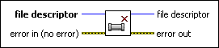
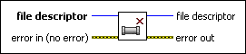

Close Pipe VI
Owning Palette: Pipes VIs
Requires: Base Development System (Linux)
Closes a pipe. Other processes reading the pipe will receive EOF (end-of-file).

 Add to the block diagram Add to the block diagram |
 Find on the palette Find on the palette |
Owning Palette: Pipes VIs
Requires: Base Development System (Linux)
Closes a pipe. Other processes reading the pipe will receive EOF (end-of-file).

| Add to the block diagram |
Find on the palette |
 |
file descriptor is the file descriptor to use when closing the pipe. |
 |
error in describes error conditions that occur before this node runs. With the following exception, this input provides standard error in functionality.
This node runs normally even if an error occurred before this node runs. |
 |
file descriptor is the file descriptor to use when closing the pipe. |
 |
error out contains error information. This output provides standard error out functionality. |